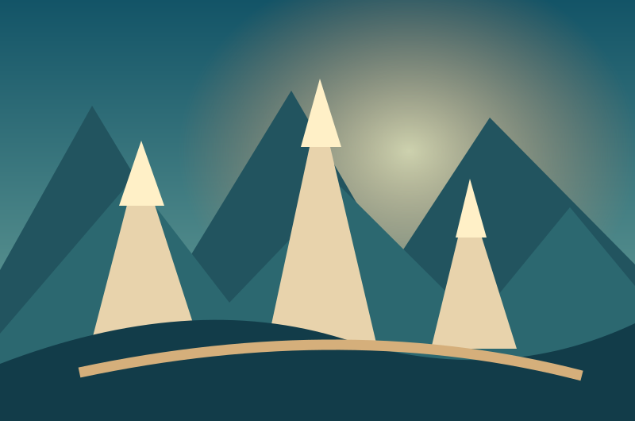
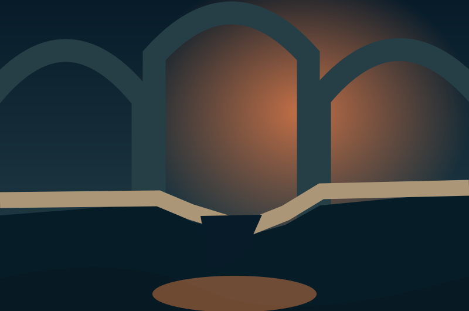
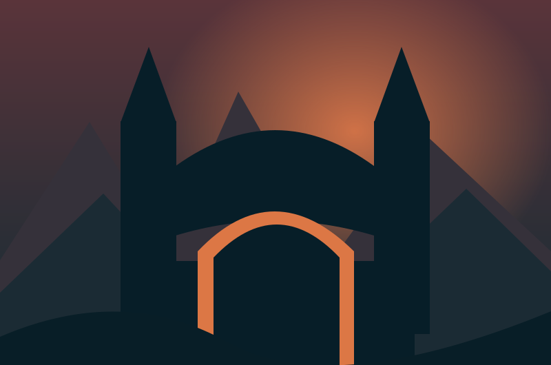
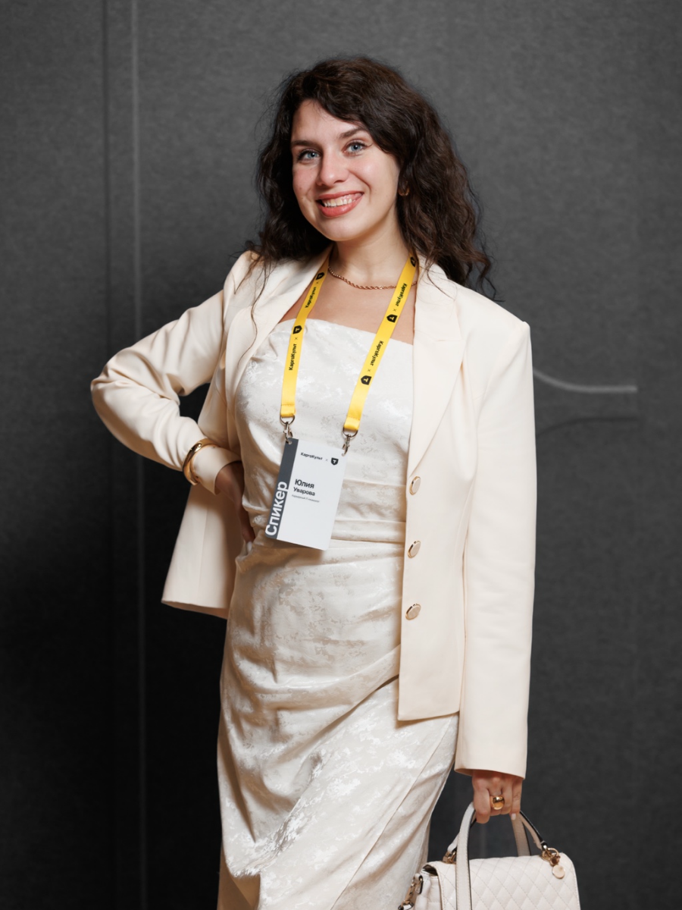

ГЛАВА I · РИВЕНДЕЛЛСовет, который не может договориться
Эльфы, гномы и люди спорят, как нести Кольцо. У каждого — своя часть карты и веские доводы. Выберите путь, прежде чем враг отрежет дороги.
Договариваться · Слышать других · РешатьСаурон посеял раздоры между народами. Впереди — спорные решения, разрушенные мосты и очень несговорчивый орк. Соберите Братство и пройдите фэнтези-квест, в котором побеждают смекалка, переговоры и командная работа.
Выбирайте эльфов, гномов, людей, хоббитов или свободных орков. Собирайте руны, спорьте о маршруте, разгадывайте загадки, договаривайтесь с персонажами и помогайте соседнему Братству.
HR получает совместный опыт, новые контакты в команде и практику soft skills — без обязательных откровений, неловких упражнений и разговоров о проблемах на работе.
С любимым напитком, роллами и хорошим настроением.
Мини-команды, короткие миссии и живые решения.
Обсуждаем героев, а не личные трудности.
Ваши решения меняют ход истории.
Не нужно помнить сюжет фильмов. Все правила объясним перед стартом.
Знакомые IT-дилеммы спрятаны внутри фэнтези-приключения. Вот один из возможных маршрутов.

ГЛАВА I · РИВЕНДЕЛЛЭльфы, гномы и люди спорят, как нести Кольцо. У каждого — своя часть карты и веские доводы. Выберите путь, прежде чем враг отрежет дороги.
Договариваться · Слышать других · Решать
ГЛАВА II · МОРИЯСемь камней времени, одна пропасть и десяток срочных задач. Восстановите переход, распределите роли и придумайте план Б.
Приоритеты · Делегирование · Гибкость
ГЛАВА III · МОРДОРГракх не верит обещаниям, выдвигает нелепые условия и грозится закрыть ворота. Выясните, чего он хочет, и договоритесь, не сдав своих.
Переговоры · Конфликты · ГраницыПока герои спорят с королями и ищут выход из Мордора, участники практикуют навыки, которые пригодятся в работе.
Библиотека игровых ситуаций позволяет собрать три уровня под команду: для тимлидов, разработчиков или смешанной группы руководителей.
Разные интересы и выбор маршрута, который устроит всех.
Обмен фрагментами знаний: никто не видит всей картины.
Ресурсы, порядок действий и ответственность за результат.
Незаменимый эксперт пропал. Как справиться без него?
Три стены под ударом, а защитников хватит не на всё.
Несговорчивый страж, неприемлемые условия и поиск сделки.
Неясное поручение: как узнать, что на самом деле требуется?
Большинство уверено, но один герой нашёл опасную ошибку.
Эльфы и гномы обвиняют друг друга. Как восстановить доверие?
Враг сменил курс. Придётся быстро менять стратегию.
Выберите путь. В полной игре вы будете договариваться с союзниками, обмениваться разведданными и сталкиваться с последствиями решений.
Выберите маршрут и узнайте, что приготовило Средиземье.
Достаточно ноутбука, видеосвязи и хорошей компании. Ведущая управляет сюжетом и помогает всем оставаться в игре.
Выбираем народ и БратствоЭльфы, гномы, люди, хоббиты и свободные орки. У всех свои способности.
Проходим три миссииОбсуждаем варианты, выбираем действия, открываем сюжетные повороты.
Соревнуемся за руныНабираем очки за решения и помощь союзникам.
Объединяем силы у Роковой горыРуны складываются в общий результат. Побеждают все Братства.

Меня зовут Юлия Уварова. Я IT-психолог, 9 лет работала в разработке и 11 лет занимаюсь психологией. Знаю, как общаются разработчики, менеджеры и руководители — и как сделать командное взаимодействие живым, а не формальным.
Напишите в Telegram: обсудим состав участников и подберём игровые миссии. Можно просто задать вопросы, без обязательств.
Обсудить тимбилдинг в Telegram ↗Юлия Уварова · @julia_uvarova_psy